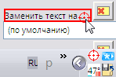

CaptureText
Назначение
Захватывает текст с кнопок, меню, списков.

Взаимосвязанные
CaptureText
Описание
Важно: если ОС x64, то используйте программу также x64, иначе не будет захватывать списки.
Утилита предназначена для захвата текста с элементов окна (кнопок, полей ввода и т.д.), заголовков окон.
Во время захвата утилита показывает расширенную информацию окна над которым находится курсор. Для захвата нужно перетащить иконку с трея на окно или элемент окна не отпуская кнопку мыши, а при отпуске текст элемента под курсором отправится в буфер обмена. При отпуске, если нажата клавиша Ctrl, то в буфер обмена отправляется цвет пикселя под курсором, при удерживании Alt - класс окна, Shift - стили окна.
Утилита полезна, если необходимо переводить тексты элементов окна. Захватить текст и отправить его в окно переводчика.
Так как при захвате ListView, TreeView, Tab, ListBox, ComboBox (Таблицы, Дерево, Вкладки, Списки, Раскрывающиеся списки) их имена не представляют никакой пользы, то утилита обрабатывает содержимое этих элементов, возвращая имена всех пунктов. Захват дерева эксплорера и реестра обрабатывается только для раскрытых папок. Остальные, например дерево в CHM, обрабатывается полностью. Такое ограничение для эксплорера и реестра связано во первых с практичностью, вот вторых обработка такого большого количества данных приводит к сообщению о нехватки памяти.
Для ComboBox (Раскрывающиеся списки) есть особенность, если захватывать центральную часть (поле Edit), то получаем один пункт, если весь прямоугольник, то весь список.
При удерживании CAPS LOCK и отпуск мыши на заголовке окна, при наличии главного меню, оно будет захвачено. Список будет содержать таблицу ID и текст пункта напротив.
Учтите, что элементы управления созданные не средствами Windows (например программы написанные на Дельфи) не будут возвращать содержимое. Отличить такой элемент можно по классу.
Программа отлично работает на WinXP, а на Win7 требует сноровки, итак, если у вас Win7 то сделайте клик на иконке в трее и через пол-секунды сделайте второй клик нажатием и не отпуская тащите курсор на выбранное окно. Первый клик создаёт курсор, вторым ловите появившийся курсор.